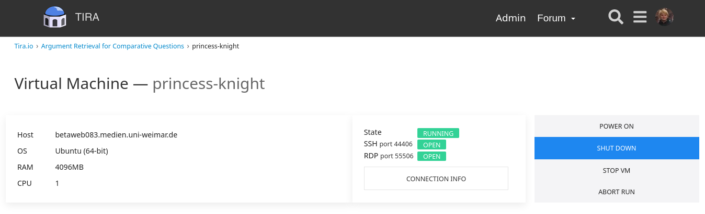
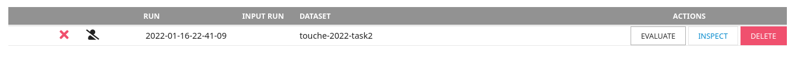

Touché Task 3: Image Retrieval for Arguments
Synopsis
- Task: Given a controversial topic, the task is to retrieve images (from web pages) for each stance (pro/con) that show support for that stance. [forum] [announcements]
- Input: [collection] [training judgements]
- Evaluation: [topics]
- Submission: [baseline] [verifier] [tira]
Data
This task uses a focused crawl of about 20,000 images (and associated web pages) as document collection. See the collection's README for more information on its contents and file formats. We may still modify the collection until the end of 2021 based on feedback and own considerations. The collection also contains a small set of training judgements for basic testing. [collection] [training judgements]
Evaluation
Systems are evaluated on Touché topics 1–50 by the ratio of images among the 20 retrieved images for each topic (10 images for each stance) that are all three: relevant to the topic, argumentative, and have the associated stance. The file format is explained in the README). [topics]
Submission
We encourage participants to use TIRA for their submissions to allow for a better reproducibility (see the Quickstart section below). Email submission is allowed as a fallback. For each topic and stance, include 10 retrieved images. Each team can submit up to 5 different runs.
The submission format adapts the standard TREC format. Each line corresponds to an image retrieved for some topic and stance at a certain rank, making a run file 1000 lines long (50 topics, 2 stances, 10 ranks). Each line contains the following fields, separated by single whitespaces: [verifier]
- The topic number (1 to 50).
- The stance ("PRO" or "CON").
- The image's ID (corresponds to the name of the image's directory in the collection; always 17 characters long and starts with "I").
- The rank (1 to 10 in increasing order per topic and stance). Not used in this year's evaluation.
- A score (integer or floating point; non-increasing per topic and stance). Not used in this year's evaluation.
- A tag that identifies your group and the method you used to produce the run.
1 PRO I000330ba4ea0ad13 1 17.89 myGroupMyMethod 1 PRO I0005e6fe00ea17fd 2 16.43 myGroupMyMethod ... 1 CON I0009d5f038fe6f2e 1 15.89 myGroupMyMethod 1 CON I000f34bd3f8cb030 2 14.43 myGroupMyMethod ...
If you have questions, please ask in the forum. You will get a combined TIRA-and-forum account on registration. Announcements are published here.
TIRA Quickstart
Participant software is run in a virtual machine. Log in to TIRA, go to the task's dataset page, and click on ">_ SUBMIT". Click the "CONNECTION INFO" button for how to connect to the virtual machine. Click on "POWER ON" if the state is not "RUNNING".

The software is executed on the command line with two parameters: (1) $inputDataset refers to a directory that contains the collection; (2) $outputDir refers to a directory in which the software has to create the submission file named run.txt. Specify exactly how each software of your virtual machine is run using the "Command" field in the TIRA web interface:
As you "RUN" the software, you will not be able to connect to the virtual machine (takes at least 10 minutes). Once finished, click on "INSPECT" to check on the run and click on "EVALUATE" for a syntax check (give it a few minutes, then check back on the page). Your run will later be reviewed and evaluated by the organizers. If uncertain on something, ask in the forum or send a mail/message to Johannes.
Create a separate "Software" entry in the TIRA web interface for each of your approaches. NOTE: By submitting your software you retain full copyrights. You agree to grant us usage rights for evaluation of the corresponding data generated by your software. We agree not to share your software with a third party or use it for any purpose other than research.
Related Work
- Johannes Kiesel, Nico Reichenbach, Benno Stein, and Martin Potthast. Image Retrieval for Arguments Using Stance-Aware Query Expansion. 8th Workshop on Argument Mining (ArgMining 2021) at EMNLP, November 2021.
- Dimitar Dimitrov, Bishr Bin Ali, Shaden Shaar, Firoj Alam, Fabrizio Silvestri, Hamed Firooz, Preslav Nakov, and Giovanni Da San Martino. SemEval-2021 Task 6: Detection of Persuasion Techniques in Texts and Images. 15th International Workshop on Semantic Evaluation (SemEval 2021), August 2021.
- Keiji Yanai. Image collector III: a web image-gathering system with bag-of-keypoints. 16th International Conference on World Wide Web (WWW 2007), May 2007.